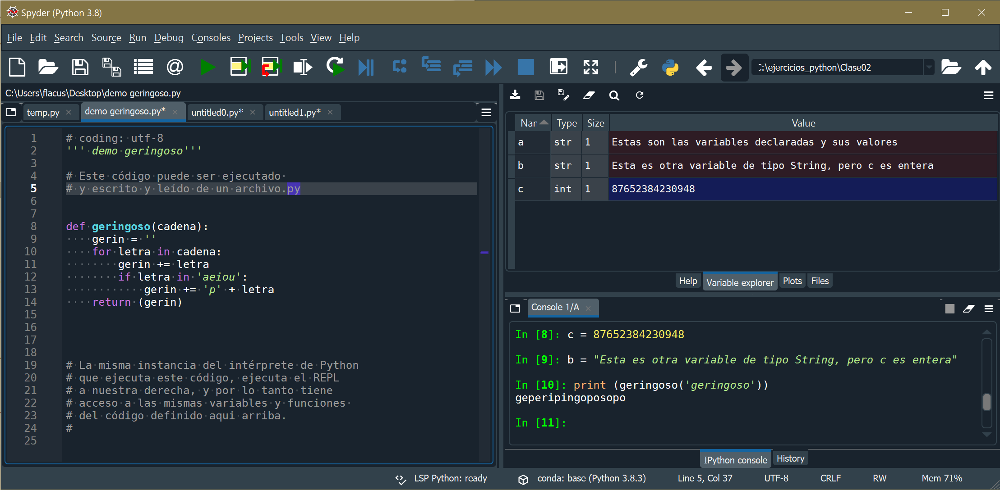
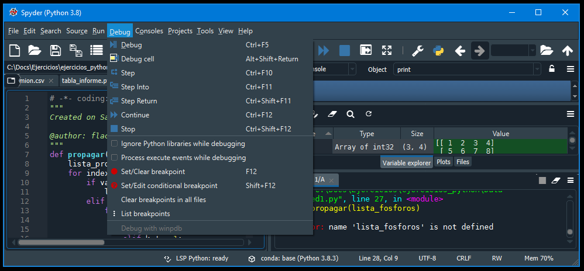
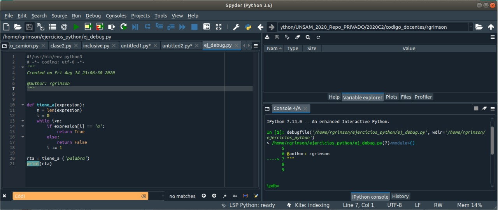
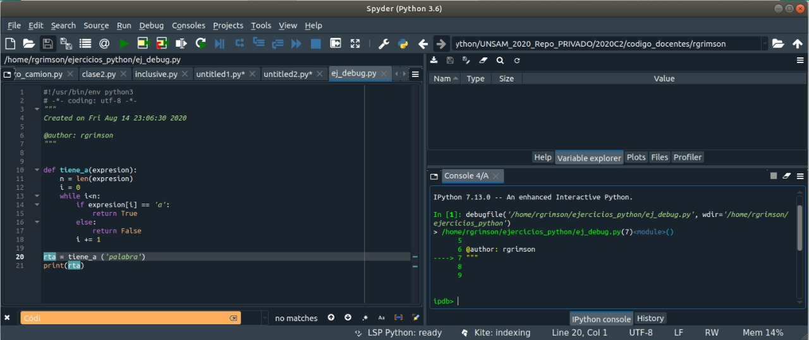
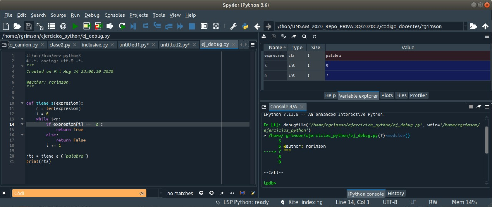
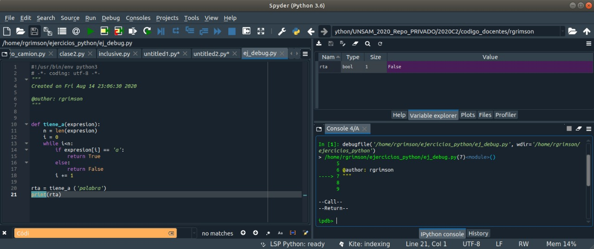

Contenidos | Próximo (2 Listas y búsqueda lineal)
4.1 Debuggear programas
Python tiene un debugger poderoso que te permite probar porciones de código. Esto es sencillo y está integrado en IDEs como Spyder.
Vimos en la Sección 3.1 diferentes ejemplos de problemas que pueden aparecer y tuviste que arremangarte e ingeniártelas para resolverlos a mano. En esta sección vamos a introducir la herramientas pdb (Python debugger) que ofrece el lenguaje para resolver este tipo de problemas.
Testear es genial, debuggear es horrible.
Se dice que hay un bug (un error) cuando un programa no se comporta como el programador espera o hace algo inesperado. Es muy frecuente que los programas tengan bugs. Después de escribir un fragmento de código por primera vez, es conveniente correrlo algunas veces usando tests que permitan poner en evidencia esos bugs.
Diseñar un conjunto de tests adecuado no es una tarea sencilla y es frecuente que queden casos especiales que causen errores inesperados.
Python es un lenguaje interpretado, con tipos de datos dinámicos (una misma variable puede cambiar de tipo, de int a float, por ejemplo). No tiene un compilador que te alerte sobre inconsistencias de tipos antes de ejecutar el programa. Es bueno usar buenas prácticas que minimicen estos potenciales errores pero igual es posible que algunos errores se filtren.
Testear consiste en ejecutar un programa o porción de código en condiciones controladas, con entradas conocidas y salidas predichas de forma de poder verificar si lo que da el algoritmos es lo que esperabas.
La ejecución de un algoritmo puede pensarse como un árbol (el árbol de ejecución del algoritmo, cada condición booleana da lugar a una ramificación del árbol). Según la entrada que le des, el programa se va a ejecutar siguiendo una rama u otra. Lo ideal es testear todas las ramas posibles de ejecución y que los casos de prueba (test cases) incluyan todos los casos especiales (casos como listas vacías, índices apuntando al primer o al último elemento, claves ausentes, etc.) comprobando en cada caso que el programa se comporte según lo esperado.

Los entornos de desarrollo integrado (como el Spyder) dan la posiblidad de combinar el uso de un intérprete de Python con un editor de código y suelen integrar también el uso del debugger. Aún con herramientas como el Spyder, hacer debugging es lento y tedioso. Antes de entrar en los detalles de cómo hacerlo, comentaremos algunos métodos que tratan de reducir su necesidad. Profundizaremos sobre estos métodos más adelante.
Aseveraciones (assert)
El comando assert se usa para un control interno del programa. Si la expresión que queremos verificar es False, se levanta una excepción de tipo AssertionError. La sintaxis de assert es la siguiente.
assert <expresion> [, 'Mensaje']
Por ejemplo
assert isinstance(10, int), 'Necesito un entero (int)'
La idea no es usarlo para comprobar la validez de lo ingresado por el usuario. El propósito de usar assert es verificar que ciertas condiciones se cumplan. En general se lo usa mientras el programa está en desarrollo, y luego se los quita o desactiva cuando el programa funciona.
Programación por contratos
Se llama programación por contratos a una forma de programar en la que le programadore define, para cada parte del programa, el tipo y formato de datos con que llamarla y el tipo de datos que devolverá.
Para asegurarse que los tipos de datos sean los esperados, el uso irrestricto de verificaciones puede ayudar en el diseño de software, y detecta tempranamente un error en los datos pasados a una función evitando que se propague.
Por ejemplo: podrías poner verificaciones para cada parámetro de una función.
def add(x, y):
assert isinstance(x, int), 'Necesito un entero (int)'
assert isinstance(y, int), 'Necesito un entero (int)'
return x + y
De este modo, una funcion puede verificar que todos sus argumentos sean válidos.
>>> add(2, 3)
5
>>> add('2', '3')
Traceback (most recent call last):
...
AssertionError: Necesito un entero (int)
>>>
El debugger de Python (pdb)
Es posible usar el debugger de Python directamente en el intérprete (sin interfaz gráfica) para seguir el funcionamiento de un programa. No vamos a entrar en esos detalles acá. Solo mencionamos que la función breakpoint () inicia el debugger:
def mi_funcion():
...
breakpoint() # Iniciar el debugger (Python 3.7+)
...
Podés encontrar instrucciones detalladas acá sobre como usarlo.
Nos resulta más cómodo usar un IDE como Spyder para hacer debugging y ése es el método que describiremos aquí. Este es el menú desplegable del debugger:

Fijate los nombres de cada ícono:
| Nombre | Acción |
|---|---|
| Debug | inicia el modo debug |
| Step | da un paso en el programa |
| Step Into | entra en la función referida |
| Step Return | ejecuta hasta salir de la función |
| Continue | retoma la ejecución normal |
| Stop | detiene el programa |
Vamos a volver a analizar el siguiente código, similar al del Ejercicio 3.1 para que veas la utilidad del debugger:
def tiene_a(expresion):
n = len(expresion)
i = 0
while i<n:
if expresion[i] == 'a':
return True
else:
return False
i += 1
rta = tiene_a ('palabra')
print(rta)
Una vez que tengas el código copiado en el Spyder, vamos a ejecutarlo en modo debug:
Primero entramos al modo debug (Ctrl+F5): El programa queda pausado antes de comenzar. Notá los cambios en la ventana interactiva.

Si damos un paso en el programa: ¿qué va a ocurrir? Debemos tratar de responder esta pregunta antes de avanzar cada paso. Es nuestra predicción, contrastada con lo que realmente sucede, lo que delata el error.
Queremos ver la evolución de las variables en la solapa Variable Explorer (solapa del centro en el panel superior de la derecha). El programa está en ejecución pero pausado. Sabemos que estamos en modo debug por el prompt ipdb> abajo.
Damos algunos pasos (con Step, Ctrl + F10) hasta llegar a la llamada a la función tiene_a() que queremos analizar.

Fijate que el debugger pasó por la línea de definición de la función (y ahora sabe dónde ir a buscarla) pero nunca entró al cuerpo de la función aún. Eso va a ocurrir recién al llamarla.
A esta altura, no queremos simplemente dar un paso (eso ejecutaría la función entera, de una) sino entrar en los detalles de esta función. Para eso usamos Step Into (Ctrl + F11) de forma de entrar en la ejecución de la función tiene_a(). Una vez dentro, seguimos dando pasos (con Step, Ctrl + F10), siempre pensando qué esperamos que haga la función y observando la evolución de las variables en el explorador de variables. Sigamos así hasta llegar al condicional if. Vemos en el Variable Explorer que todas las variables internas de la función están definidas y con sus valores asignados.

Como i = 0 sabemos que es la primera iteración. Corroboramos que n=7 (“palabra” tiene 7 letras). En este punto se evalúa if palabra[i] == 'a':, y saltaremos a alguna de las dos ramas de ejecución según la evaluación resulte True o False.
La expresión resulta False ya que la primera letra de 'palabra' es la 'p' y no una 'a'. Pero entonces la siguiente instrucción será return False con lo que saldremos de la función habiendo sólo evaluado la primera letra de la palabra pasada como parámetro. ¿Esto es lo que queríamos?

Acabamos de volver de la función. Las variables internas a la función ya no están visibles (salimos de su alcance o scope). El programa sigue en ejecución, en modo debug.
Si seguimos dando pasos con Step (Ctrl + F10) vamos a pasar por el print() y terminar la ejecución del programa, saliendo del modo debug.
Si, en cambio, al llegar a la línea del print() en lugar de Step (Ctrl + F10) avanzáramos con un Step Into (Ctrl + F11), entraríamos en los detalles de la definición de esta función y la cosa se pondría un toque técnica. Cuando esto ocurre es útil usar el Step Return (Ctrl + Shift + F11) para salir de tanto nivel de detalle.
En todo caso, lo que observamos en esta ejecución de tiene_a() es que salimos de la función después de haber analizado sólo la primera letra de la palabra. ¿Es correcto esto? ¿Donde está el error? ¿Cómo lo podemos resolver?
Comentario. Recorrer la ejecución de un programa como un simple espectador no nos muestra claramente un error en el código. Es la incongruencia entre lo esperado y lo que realmente sucede lo que lo marca. Esto exige mucha atención para, antes de ejecutar cada paso, preguntarse: ¿qué espero que ocurra? Luego, al avanzar un paso en la ejecución, puede ocurrir que lo que esperamos que pase no sea lo que realmente pasa. Entonces estamos en un paso clave de la ejecución, que nos marca que estamos frente a una de dos: ó frente a un error en el código ó frente a la oportunidad de mejorar nuestra comprensión del mismo.
Ejercicios
Ejercicio 4.1: Debugger
Ingresá y corré el siguiente código en tu IDE:
def invertir_lista(lista):
'''Recibe una lista L y la develve invertida.'''
invertida = []
i = len(lista)
while i > 0: # tomo el último elemento
i = i-1
invertida.append (lista.pop(i)) #
return invertida
l = [1, 2, 3, 4, 5]
m = invertir_lista(l)
print(f'Entrada {l}, Salida: {m}')
Deberías observar que la función modifica el valor de la lista de entrada. Eso no debería ocurrir: una función nunca debería modificar los parámetros salvo que sea lo esperado. Usá el debugger y el explorador de variables para determinar cuál es el primer paso clave en el que se modifica el valor de esta variable.
Ejercicio 4.2: Más debugger
Siguiendo con los ejemplos del Ejercicio 3.1, usá el debugger para analizar el siguiente código:
import csv
from pprint import pprint
def leer_camion(nombre_archivo):
camion = []
registro = {}
with open(nombre_archivo,"rt") as f:
filas = csv.reader(f)
encabezado = next(filas)
for fila in filas:
registro[encabezado[0]] = fila[0]
registro[encabezado[1]] = int(fila[1])
registro[encabezado[2]] = float(fila[2])
camion.append(registro)
return camion
camion = leer_camion('../Data/camion.csv')
pprint(camion)
Observá en particular lo que ocurre al leer la segunda fila de datos del archivo y guardarlos en la variable registro con los datos ya guardados en la lista camion.